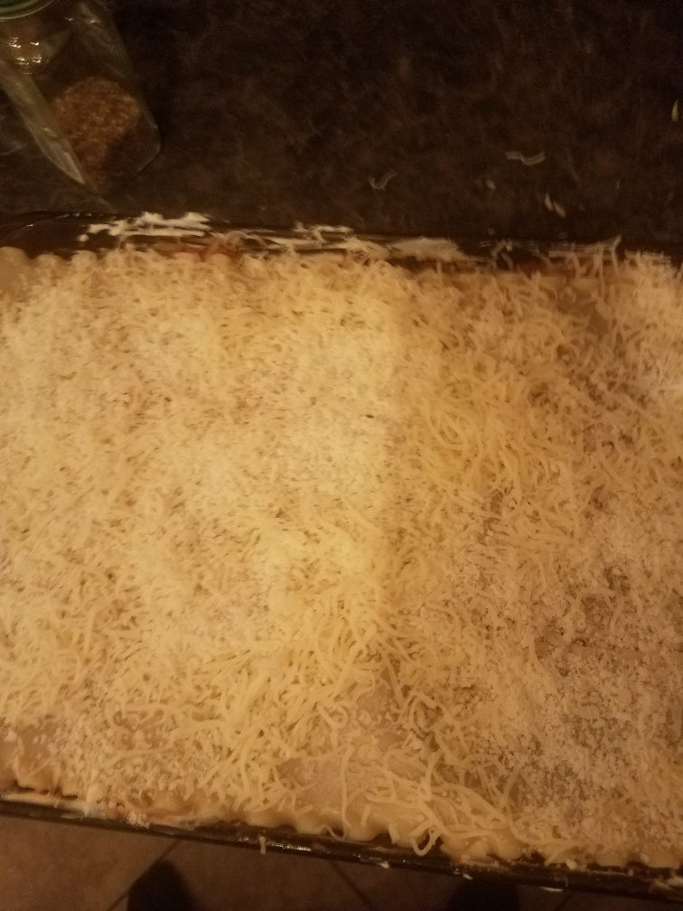
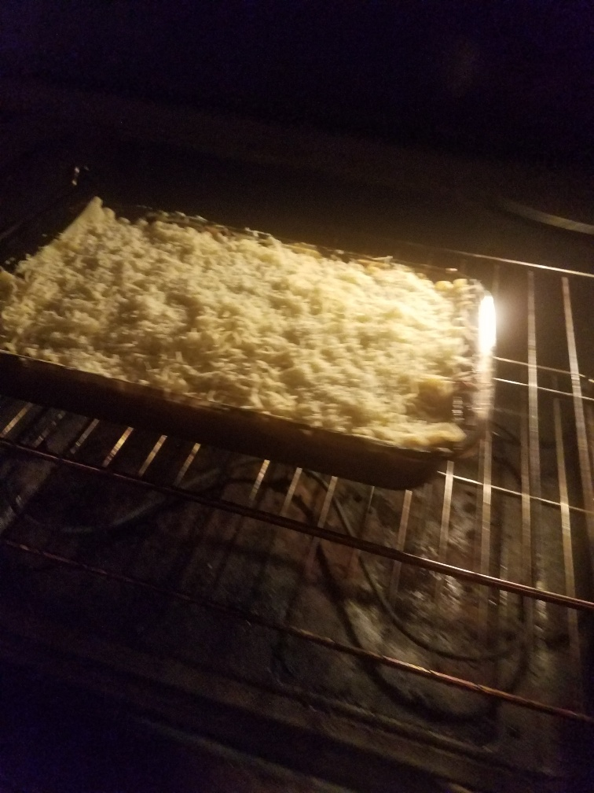
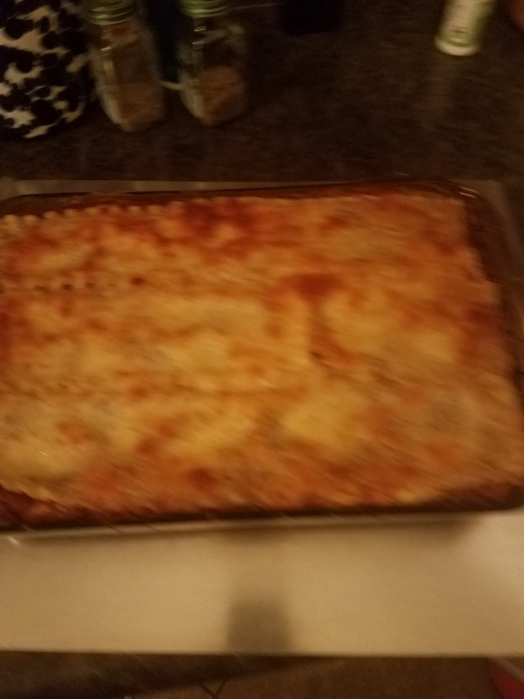

Recipe Demo
For my creative page I wanted to demonstrate a favorite recipe I enjoy preparing for my family.
For the list of ingredients and a more comprehensive detail of instructions please visit:
Easiest Lasagna Ever - Damn Delicious
 |
Preheat oven to 350 degrees F and Lightly oil a baking dish. |
 |
In a large pot of boiling water, add noodles cooking until tender. |
 |
Heat olive oil in a large skillet over medium high heat. Add Onion and garlic cooking until translucent. |
 |
Add ground beef and cook until beef has browned season with salt and pepper. Drain excess fat. |
 |
Stir in tomatoes, Italian seasoning and Oregano until well combined. let simmer on low heat. |
 |
Drain noodles and set aside. |
 |
Combine ricotta, one large beaten egg, and 1/2 cup shredded mozzarella. |
 |
Scoop one cup of sauce mixture and spread evenly in the baking dish. |
 |
Layer 3 noodles on top of the sauce. |
 |
Add half of the ricotta mixture and smooth it out. |
 |
The next layer add 1 cup of shredded mozzarella. |
 |
Repeat step 8. |
 |
Repeat step 9. |
 |
Repeat step 10. |
 |
Add a final layer of 3 noodles. |
 |
Add remaining meat sauce. |
|  | Top with 1 cup shredded mozzarella and 1/4 cup of grated parmesan. |
|  | Bake in oven for 35 to 45 minutes. |
|  | Let cool for 15 minutes and enjoy. |